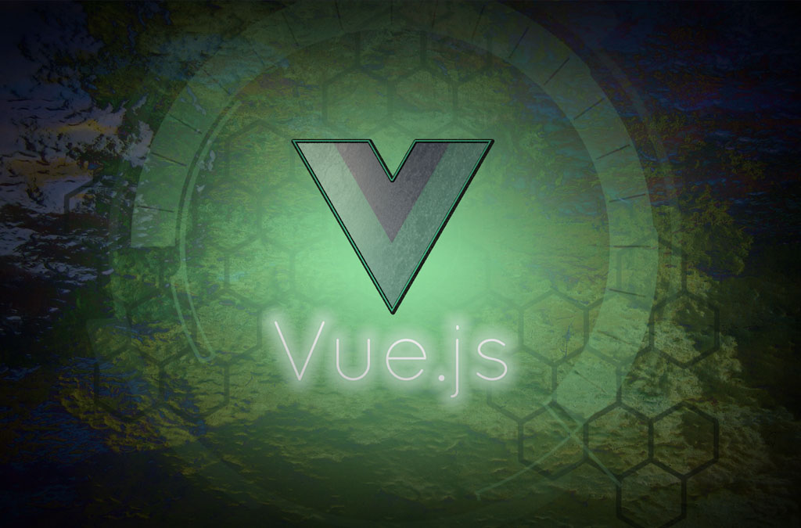
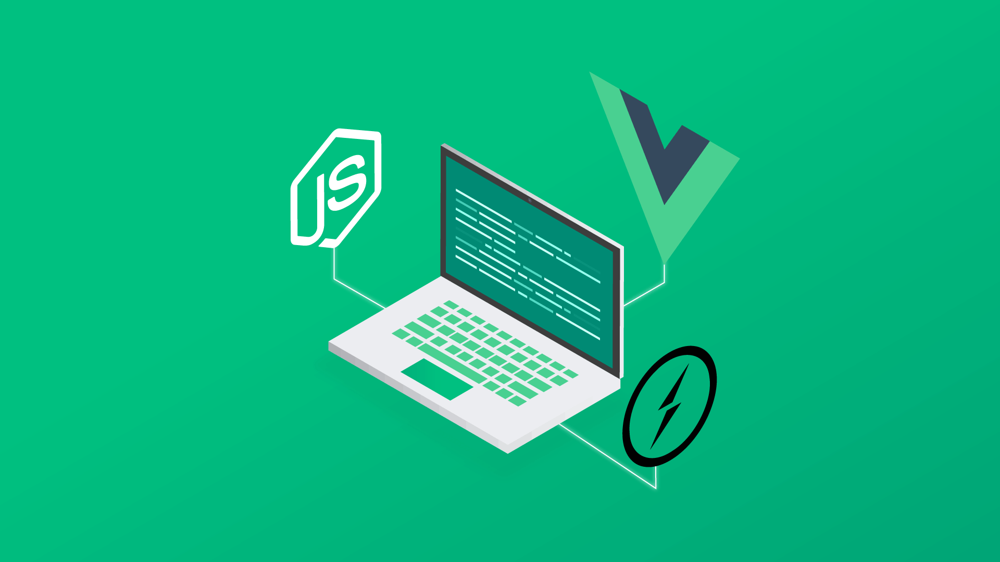

Что такое Vue.js
Vue.js – JavaScript-фреймворк с открытым исходным кодом для создания пользовательских интерфейсов веб-приложений с использованием шаблона архитектуры MVVM (Model-View-ViewModel). В отличие от фреймворков-монолитов, Vue создан пригодным для постепенного внедрения. Его ядро в первую очередь решает задачи уровня представления (view), что упрощает интеграцию с другими библиотеками и существующими проектами. С другой стороны, Vue полностью подходит и для создания сложных одностраничных приложений (SPA, Single-Page Applications), если использовать его совместно с современными инструментами и дополнительными библиотеками.
Visual Studio Code имеет встроенную поддержку Vue.js построение блоков HTML, CSS и JavaScript. Ознакомиться с Visual Studio Code можете здесь
Возможности фреймворка
Для более богатого Vue.js среду разработки, вы можете установить расширение Vetur, которое поддерживает Vue.js IntelliSense, фрагменты кода, форматирование и многое другое.
Поскольку Vue работает только на «уровне представления» и не используется для промежуточного программного обеспечения и бэкэнда, он может легко интегрироваться с другими проектами и библиотеками. Vue.js содержит широкую функциональность для уровня представлений и может использоваться для создания мощных одностраничных веб-приложений.
Функции Vue.js:
- Реактивные интерфейсы
- Декларативный рендеринг
- Связывание данных
- Директивы (все директивы имеют префикс «V-». В директиву передается значение состояния, а в качестве аргументов используются html атрибуты или Vue JS события)
- Логика шаблонов
- Компоненты
- Обработка событий
- Свойства
- Переходы и анимация CSS
- Фильтры
Особенности Vue.js
Vue JS, как и любой другой подобный инструмент, обладает собственными особенностями, которые его выделяют на общем фоне:
- Virtual DOM. Vue JS работает с виртуальным DOM, как и некоторые другие фреймворки, такие как React, Ember и др. Кстати, впервые такая возможность стала доступной на React. Оценив ее достоинства, другие инструменты для разработки стали применять ее у себя. Так поступил и Vue JS.
- Привязывает данные элементам. В Vue JS есть специальная функция, которая способна создавать и привязывать значения элементам HTML: изменять атрибуты, стили, взаимодействовать с классами и др.
- Компонентность. Vue JS создает собственные компоненты (они же пользовательские элементы) — их можно неоднократно повторять в HTML-документе.
- Анимация. Данный фреймворк легко взаимодействует со сторонними библиотеками анимации. Помимо этого, по умолчанию в нем встроены функции, которые могут задавать элементам «эффект перехода».
- Шаблоны. В Vue JS есть собственные HTML-шаблоны, что может ускорить вашу разработку.
- Директивы. В этом фреймворке встроены собственные директивы: v-if, v-else, v-show и др. Они помогают быстрее и легче выполнять различные действия во frontend.
- Наблюдатель. В Vue JS есть собственный «наблюдатель», который, например, будет следить за изменяемыми вводными данными. Для этого не нужно писать дополнительный код.
- Компактность. Сам фреймворк очень легковесный, поэтому он не «нагрузит» вашу разработку и обеспечит должную производительность.
Где применяется Vue.js
Vue подходит для небольших проектов, которым необходимо добавить немного реактивности, представить форму с помощью AJAX, отобразить значения при вводе данных пользователем, авторизация или другие аналогичные задачи. Vue легко масштабируется и хорошо подходит для объемных проектов, поэтому его называют прогрессивным фреймворком.
Vue также отлично подходит для крупных одностраничных приложений благодаря своим основным компонентам, таким как Router и Vuex. С Vue можно как использовать общедоступные API для создания приложений, так и реализовывать выполняемые сервером приложения. Но Vue лучше всего подходит для разработки решений, которые используют внешние API для обработки данных.
С помощью Vue также можно создавать frontend блога на популярных CMS. Vue.js отлично подходит и для разработки динамических интерфейсов, которые адаптируются под пользователя.
Почему стоит выбрать Vue.js
- Vue реактивен, производителен и прост в освоении.
- Легко интегрируется в проекты с использованием других JavaScript-библиотек.
- Vue имеют Virtual DOM (document object model), который создает копию объектного представления структурного документа и позволяет работать с визуальной копией, а не с самим представлением. Этот подход помогает повысить производительность фреймворков и таким образом ваше приложение будет работать быстрее.
- Компоненты Vue легко использовать в уже существующем проекте.
- Vue имеет хорошую документацию, касающуюся в том числе API.
- Имеет лицензию MIT, следовательно фреймворк можно использовать где и когда угодно.
- Изучить его сможет быстро даже тот, кто никогда до этого не имел дела с JS-фреймворками.
- Vue предоставляют больше контроля над размером приложений, позволяя выбирать только те элементы, которые необходимы в конкретных случаях.
Установка Vue.js
Чтобы установить и использовать интерфейс командной строки Vue, а также запустить сервер приложений Vue, вам понадобится Node.js. Ознакомиться с Node.js можете здесь
Среда выполнения JavaScript и npm (the Node.js менеджер пакетов) установлены изначально, npm включен в Node.js который вы можете установить при загрузке Node.js. Чтобы проверить, что у вас есть Node.js и npm, правильно установленный на вашем компьютере, вы можете ввести node --version и npm --version.
Чтобы установить vue, в терминале или командной строке введите:
npm install -g
Установка может занять несколько минут. Теперь вы можете создать новый Vue.js приложение, набрав:
vue create my-app
где my-app имя папки для вашего приложения. Вам будет предложено выбрать предустановку, и вы можете сохранить значение по умолчанию(babel, eslint), которое будет использовать Babel для переноса JavaScript в совместимый с браузером ES5 и установки ESLint linter для обнаружения ошибок кодирования. Создание приложения Vue и установка его зависимостей может занять несколько минут.
Давайте быстро запустим наше приложение Vue, перейдя в новую папку и введя npm run server , чтобы запустить веб-сервер и открыть приложение в браузере:
cd my-app
npm run server
Вы должны увидеть "Добро пожаловать на ваш Vue.js Приложение " вкл. http://localhost:8080 в вашем браузере. Вы можете нажать Ctrl + C, чтобы остановить vue-cli-service сервер.
Чтобы открыть приложение Vue в VS Code с терминала (или командной строки), перейдите к my-app папке и введите code .:
cd my-app
code .
VS Code запустит и отобразит ваше приложение Vue в проводнике файлов.